2015年北京市中考数学试题 原卷解析
2015年北京市中考数学试卷
一、选择题（本题共30分，每小题3分）下面各题均有四个选项，其中只有一个是符合题意的
1．（3分）（2015•北京）截止到2015年6月1日，北京市已建成34个地下调蓄设施，蓄水能力达到140000立方米，将140000用科学记数法表示应为（ ）
A．14×104B．1.4×105C．1.4×106D．14×106
【解答】解：140000=1.4×105，
故选B．
2．（3分）（2015•北京）实数a，b，c，d在数轴上的对应点的位置如图所示，这四个数中，绝对值最大的是（ ）

A．aB．bC．cD．d
【解答】解：根据图示，可得
3＜|a|＜4，1＜|b|＜2，0＜|c|＜1，2＜|d|＜3，
所以这四个数中，绝对值最大的是a．
故选：A．
3．（3分）（2015•北京）一个不透明的盒子中装有3个红球，2个黄球和1个绿球，这些球除了颜色外无其他差别，从中随机摸出一个小球，恰好是黄球的概率为（ ）
A． B．
B． C．
C． D．
D．
【解答】解：从中随机摸出一个小球，恰好是黄球的概率= =．
=．
故选B．
4．（3分）（2015•北京）剪纸是我国传统的民间艺术，下列剪纸作品中，是轴对称图形的为（ ）
A． B．
B． C．
C． D．
D．
【解答】解：A、不是轴对称图形，
B、不是轴对称图形，
C、不是轴对称图形，
D、是轴对称图形，
故选：D．
5．（3分）（2015•北京）如图，直线l1，l2，l3交于一点，直线l4∥l1，若∠1=124°，∠2=88°，则∠3的度数为（ ）

A．26°B．36°C．46°D．56°
【解答】解：如图，∵直线l4∥l1，
∴∠1+∠AOB=180°，而∠1=124°，
∴∠AOB=56°，
∴∠3=180°﹣∠2﹣∠AOB
=180°﹣88°﹣56°
=36°，
故选B．

6．（3分）（2015•北京）如图，公路AC，BC互相垂直，公路AB的中点M与点C被湖隔开．若测得AM的长为1.2km，则M，C两点间的距离为（ ）

A．0.5kmB．0.6kmC．0.9kmD．1.2km
【解答】解：∵在Rt△ABC中，∠ACB=90°，M为AB的中点，
∴MC= AB=AM=1.2km．
AB=AM=1.2km．
故选D．
7．（3分）（2015•北京）某市6月份日平均气温统计如图所示，则在日平均气温这组数据中，众数和中位数分别是（ ）

A．21，21B．21，21.5C．21，22D．22，22
【解答】解：这组数据中，21出现了10次，出现次数最多，所以众数为21，
第15个数和第16个数都是22，所以中位数是22．
故选C．
8．（3分）（2015•北京）如图是利用平面直角坐标系画出的故宫博物院的主要建筑分布图，若这个坐标系分别以正东、正北方向为x轴、y轴的正方向，表示太和门的点的坐标为（0，﹣1），表示九龙壁的点的坐标为（4，1），则表示下列宫殿的点的坐标正确的是（ ）

A．景仁宫（4，2）B．养心殿（﹣2，3）
C．保和殿（1，0）D．武英殿（﹣3.5，﹣4）
【解答】解：根据表示太和门的点的坐标为（0，﹣1），表示九龙壁的点的坐标为（4，1），
可得：原点是中和殿，
所以可得景仁宫（2，4），养心殿（﹣2，3），保和殿（0，1），武英殿（﹣3.5，﹣3），
故选B
9．（3分）（2015•北京）一家游泳馆的游泳收费标准为30元/次，若购买会员年卡，可享受如下优惠：
会员年卡类型 | 办卡费用（元） | 每次游泳收费（元） |
A 类 | 50 | 25 |
B 类 | 200 | 20 |
C 类 | 400 | 15 |
例如，购买A类会员年卡，一年内游泳20次，消费50+25×20=550元，若一年内在该游泳馆游泳的次数介于45～55次之间，则最省钱的方式为（ ）
A．购买A类会员年卡B．购买B类会员年卡
C．购买C类会员年卡D．不购买会员年卡
【解答】解：设一年内在该游泳馆游泳的次数为x次，消费的钱数为y元，
根据题意得：
yA=50+25x，
yB=200+20x，
yC=400+15x，
当45≤x≤55时，
1175≤yA≤1425；
1100≤yB≤1300；
1075≤yC≤1225；
由此可见，C类会员年卡消费最低，所以最省钱的方式为购买C类会员年卡．
故选：C．
10．（3分）（2015•北京）一个寻宝游戏的寻宝通道如图1所示，通道由在同一平面内的AB，BC，CA，OA，OB，OC组成．为记录寻宝者的行进路线，在BC的中点M处放置了一台定位仪器．设寻宝者行进的时间为x，寻宝者与定位仪器之间的距离为y，若寻宝者匀速行进，且表示y与x的函数关系的图象大致如图2所示，则寻宝者的行进路线可能为（ ）

A．A→O→BB．B→A→CC．B→O→CD．C→B→O
【解答】解：A、从A点到O点y随x增大一直减小到0，故A不符合题意；
B、从B到A点y随x的增大先减小再增大，从A到C点y随x的增大先减小再增大，但在A点距离最大，故B不符合题意；
C、从B到O点y随x的增大先减小再增大，从O到C点y随x的增大先减小再增大，在B、C点距离最大，故C符合题意；
D、从C到M点y随x的增大而减小，一直到y为0，从M点到B点y随x的增大而增大，明显与图象不符，故D不符合题意；
故选：C．
二、填空题（本题共18分，每小题3分）
11．（3分）（2015•北京）分解因式：5x3﹣10x2+5x= 5x（x﹣1）2 ．
【解答】解：5x3﹣10x2+5x
=5x（x2﹣2x+1）
=5x（x﹣1）2．
故答案为：5x（x﹣1）2．
12．（3分）（2015•北京）如图是由射线AB，BC，CD，DE，EA组成的平面图形，则∠1+∠2+∠3+∠4+∠5= 360° ．
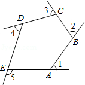
【解答】解：∠1+∠2+∠3+∠4+∠5
=（180°﹣∠BAE）+（180°﹣∠ABC）+（180°﹣∠BCD）+（180°﹣∠CDE）+（180°﹣∠DEA）
=180°×5﹣（∠BAE+∠ABC+∠BCD+∠CDE+∠DEA）
=900°﹣（5﹣2）×180°
=900°﹣540°
=360°．
故答案为：360°．
13．（3分）（2015•北京）《九章算术》是中国传统数学最重要的著作，奠定了中国传统数学的基本框架．它的代数成就主要包括开方术、正负术和方程术．其中，方程术是《九章算术》最高的数学成就．
《九章算术》中记载：“今有牛五、羊二，直金十两；牛二、羊五，直金八两．问：牛、羊各直金几何？”
译文：“假设有5头牛、2只羊，值金10两；2头牛、5只羊，值金8两．问：每头牛、每只羊各值金多少两？”
设每头牛值金x两，每只羊值金y两，可列方程组为
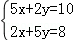
．【解答】解：根据题意得：
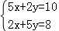
，故答案为：．
14．（3分）（2015•北京）关于x的一元二次方程ax2+bx+=0有两个相等的实数根，写出一组满足条件的实数a，b的值：a= 4 ，b= 2 ．
【解答】关于x的一元二次方程ax2+bx+=0有两个相等的实数根，
∴△=b2﹣4×a=b2﹣a=0，
∴a=b2，
当b=2时，a=4，
故b=2，a=4时满足条件．
故答案为：4，2．
15．（3分）（2015•北京）北京市2009﹣2014年轨道交通日均客运量统计如图所示．根据统计图中提供的信息，预估2015年北京市轨道交通日均客运量约 980 万人次，你的预估理由是 因为2012﹣2013年发生数据突变，故参照2013﹣2014增长进行估算． ．
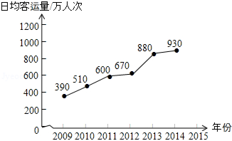
【解答】解：参考答案①：1038，按每年平均增长人数近似相等进行估算；
参考答案②：980，因为2012﹣2013年发生数据突变，故参照2013﹣2014增长进行估算．（因为题目问法比较灵活，只要理由合理均可给分，估计学生答出980至1140之间均可给分）
16．（3分）（2015•北京）阅读下面材料：
在数学课上，老师提出如下问题：
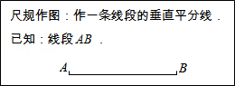
小芸的作法如下：
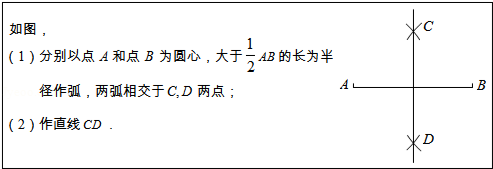
老师说：“小芸的作法正确．”
请回答：小芸的作图依据是 到线段两个端点距离相等的点在线段的垂直平分线上，两点确定一条直线． ．
【解答】解：∵CA=CB，DA=DB，
∴CD垂直平分AB（到线段两个端点距离相等的点在线段的垂直平分线上，两点确定一条直线．）
故答案为：到线段两个端点距离相等的点在线段的垂直平分线上，两点确定一条直线．．
三、解答题（本题共72分，第17－26题，每小题5分，第27题7分，第28题7分，第29题8分）解答应写出文字说明，演算步骤或证明过程．
17．（5分）（2015•北京）计算：（ ）﹣2﹣（π﹣
）﹣2﹣（π﹣ ）0+|
）0+| ﹣2|+4sin60°．
﹣2|+4sin60°．
【解答】解：原式=4﹣1+2﹣+4× =5+．
=5+．
18．（5分）（2015•北京）已知2a2+3a﹣6=0．求代数式3a（2a+1）﹣（2a+1）（2a﹣1）的值．
【解答】解：∵2a2+3a﹣6=0，即2a2+3a=6，
∴原式=6a2+3a﹣4a2+1=2a2+3a+1=6+1=7．
19．（5分）（2015•北京）解不等式组 ，并写出它的所有非负整数解．
，并写出它的所有非负整数解．
【解答】解： ，
，
由①得：x≥﹣2；
由②得：x＜ ，
，
∴不等式组的解集为﹣2≤x＜，
则不等式组的所有非负整数解为：0，1，2，3．
20．（5分）（2015•北京）如图，在△ABC中，AB=AC，AD是BC边上的中线，BE⊥AC于点E．求证：∠CBE=∠BAD．
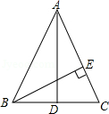
【解答】证明：∵AB=AC，AD是BC边上的中线，BE⊥AC，
∴∠CBE+∠C=∠CAD+∠C=90°，∠CAD=∠BAD，
∴∠CBE=∠BAD．
21．（5分）（2015•北京）为解决“最后一公里”的交通接驳问题，北京市投放了大量公租自行车供市民使用．到2013年底，全市已有公租自行车25 000辆，租赁点600个．预计到2015年底，全市将有公租自行车50 000辆，并且平均每个租赁点的公租自行车数量是2013年底平均每个租赁点的公租自行车数量的1.2倍．预计到2015年底，全市将有租赁点多少个？
【解答】解：设到2015年底，全市将有租赁点x个，根据题意可得：
 ×1.2=
×1.2= ，
，
解得：x=1000，
经检验得：x=1000是原方程的根，
答：到2015年底，全市将有租赁点1000个．
22．（5分）（2015•北京）在▱ABCD中，过点D作DE⊥AB于点E，点F 在边CD上，DF=BE，连接AF，BF．
（1）求证：四边形BFDE是矩形；
（2）若CF=3，BF=4，DF=5，求证：AF平分∠DAB．

【解答】（1）证明：∵四边形ABCD是平行四边形，
∴AB∥CD．
∵BE∥DF，BE=DF，
∴四边形BFDE是平行四边形．
∵DE⊥AB，
∴∠DEB=90°，
∴四边形BFDE是矩形；
（2）解：∵四边形ABCD是平行四边形，
∴AB∥DC，
∴∠DFA=∠FAB．
在Rt△BCF中，由勾股定理，得
BC= =
= =5，
=5，
∴AD=BC=DF=5，
∴∠DAF=∠DFA，
∴∠DAF=∠FAB，
即AF平分∠DAB．
23．（5分）（2015•北京）在平面直角坐标系xOy中，直线y=kx+b（k≠0）与双曲线y= 的一个交点为P（2，m），与x轴、y轴分别交于点A，B．
的一个交点为P（2，m），与x轴、y轴分别交于点A，B．
（1）求m的值；
（2）若PA=2AB，求k的值．
【解答】解：∵y=经过P（2，m），
∴2m=8，
解得：m=4；
（2）点P（2，4）在y=kx+b上，
∴4=2k+b，
∴b=4﹣2k，
∵直线y=kx+b（k≠0）与x轴、y轴分别交于点A，B，
∴A（2﹣ ，0），B（0，4﹣2k），
，0），B（0，4﹣2k），
如图，点A在x轴负半轴，点B在y轴正半轴时，
∵PA=2AB，
∴AB=PB，则OA=OC，
∴﹣2=2，
解得k=1；
当点A在x轴正半轴，点B在y轴负半轴时，
 =
= ，
，
解得，k=3．
∴k=1或k=3

24．（5分）（2015•北京）如图，AB是⊙O的直径，过点B作⊙O的切线BM，弦CD∥BM，交AB于点F，且
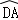
=，连接AC，AD，延长AD交BM于点E．（1）求证：△ACD是等边三角形；
（2）连接OE，若DE=2，求OE的长．
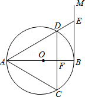
【解答】（1）证明：∵AB是⊙O的直径，BM是⊙O的切线，
∴AB⊥BE，
∵CD∥BE，
∴CD⊥AB，
∴
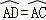
，∵=，
∴
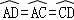
，∴AD=AC=CD，
∴△ACD是等边三角形；
（2）解：连接OE，过O作ON⊥AD于N，由（1）知，△ACD是等边三角形，
∴∠DAC=60°
∵AD=AC，CD⊥AB，
∴∠DAB=30°，
∴BE=AE，ON=AO，
设⊙O的半径为：r，
∴ON=r，AN=DN=
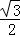
r，∴EN=2+
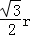
，BE=AE=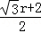
，在Rt△NEO与Rt△BEO中，
OE2=ON2+NE2=OB2+BE2，
即（）2+（2+
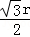
）2=r2+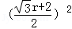
，∴r=2
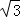
，∴OE2=
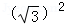
+25=28，∴OE=2
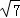
．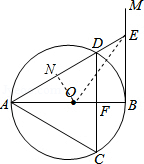
25．（5分）（2015•北京）阅读下列材料：
2015年清明小长假，北京市属公园开展以“清明踏青，春色满园”为主题的游园活动，虽然气温小幅走低，但游客踏青赏花的热情很高，市属公园游客接待量约为190万人次．其中，玉渊潭公园的樱花、北京植物园的桃花受到了游客的热捧，两公园的游客接待量分别为38万人次、21.75万人次；颐和园、天坛公园、北海公园因皇家园林的厚重文化底蕴与满园春色成为游客的重要目的地，游客接待量分别为26万人次、20万人次、17.6万人次；北京动物园游客接待量为18万人次，熊猫馆的游客密集度较高．
2014年清明小长假，天气晴好，北京市属公园游客接待量约为200万人次，其中，玉渊潭公园游客接待量比2013 年清明小长假增长了25%；颐和园游客接待量为26.2万人次，2013 年清明小长假增加了4.6万人次；北京动物园游客接待量为22万人次．
2013年清明小长假，玉渊潭公园、陶然亭公园、北京动物园游客接待量分别为32万人次、13万人次、14.9 万人次．
根据以上材料解答下列问题：
（1）2014年清明小长假，玉渊潭公园游客接待量为 40 万人次；
（2）选择统计表或统计图，将2013﹣2015年清明小长假玉渊潭公园、颐和园和北京动物园的游客接待量表示出来．
【解答】解：（1）2014年，玉渊潭公园的游客接待量是：32×（1+25%）=40（万人）．
故答案是：40；
（2）2013年颐和园的游客接待量是：26.2﹣4.6=21.6（万元）．
| 玉渊潭公园 | 颐和园 | 北京动物园 |
2013年 | 32 | 21.6 | 14.9 |
2014年 | 40 | 26.2 | 22 |
2015年 | 38 | 26 | 18 |
26．（5分）（2015•北京）有这样一个问题：探究函数y= x2+
x2+ 的图象与性质．
的图象与性质．
小东根据学习函数的经验，对函数y=x2+ 的图象与性质进行了探究．
的图象与性质进行了探究．
下面是小东的探究过程，请补充完整：
（1）函数y= x2+的自变量x的取值范围是 x≠0 ；
x2+的自变量x的取值范围是 x≠0 ；
（2）下表是y与x的几组对应值．
x | … | ﹣3 | ﹣2 | ﹣1 | ﹣ | ﹣ |
|
| 1 | 2 | 3 | … |
y | … | 
| 
| ﹣ | ﹣ | ﹣ | 
| 
| 
| 
| m | … |
求m的值；
（3）如图，在平面直角坐标系xOy中，描出了以上表中各对对应值为坐标的点．根据描出的点，画出该函数的图象；
（4）进一步探究发现，该函数图象在第一象限内的最低点的坐标是（1，），结合函数的图象，写出该函数的其它性质（一条即可） 该函数没有最大值 ．

【解答】解：（1）x≠0，
（2）令x=3，
∴y= ×32+
×32+
= +=
+= ；
；
∴m=；
（3）如图

（4）该函数的其它性质：
①该函数没有最大值；
②该函数在x=0处断开；
③该函数没有最小值；
④该函数图象没有经过第四象限．
故答案为该函数没有最大值．
27．（7分）（2015•北京）在平面直角坐标系xOy中，过点（0，2）且平行于x轴的直线，与直线y=x﹣1交于点A，点A关于直线x=1的对称点为B，抛物线C1：y=x2+bx+c经过点A，B．
（1）求点A，B的坐标；
（2）求抛物线C1的表达式及顶点坐标；
（3）若抛物线C2：y=ax2（a≠0）与线段AB恰有一个公共点，结合函数的图象，求a的取值范围．

【解答】解：（1）当y=2时，则2=x﹣1，
解得：x=3，
∴A（3，2），
∵点A关于直线x=1的对称点为B，
∴B（﹣1，2）．
（2）把（3，2），（﹣2，2）代入抛物线C1：y=x2+bx+c得：

解得：
∴y=x2﹣2x﹣1．
顶点坐标为（1，﹣2）．
（3）如图，当C2过A点，B点时为临界，

代入A（3，2）则9a=2，
解得：a= ，
，
代入B（﹣1，2），则a（﹣1）2=2，
解得：a=2，
∴ ．
．
28．（7分）（2015•北京）在正方形ABCD中，BD是一条对角线，点P在射线CD上（与点C、D不重合），连接AP，平移△ADP，使点D移动到点C，得到△BCQ，过点Q作QH⊥BD于H，连接AH，PH．
（1）若点P在线段CD上，如图1．
①依题意补全图1；
②判断AH与PH的数量关系与位置关系并加以证明；
（2）若点P在线段CD的延长线上，且∠AHQ=152°，正方形ABCD的边长为1，请写出求DP长的思路．（可以不写出计算结果）

【解答】解：（1）①如图1；
②解法一：如图1，连接CH，
∵四边形ABCD是正方形，QH⊥BD，
∴∠HDQ=45°，
∴△DHQ是等腰直角三角形．
∵DP=CQ，
在△HDP与△HQC中．
∵ ，
，
∴△HDP≌△HQC（SAS），
∴PH=CH，∠HPC=∠HCP．
∵BD是正方形ABCD的对称轴，
∴AH=CH，∠DAH=∠HCP，
∴∠AHP=180°﹣∠ADP=90°，
∴AH=PH，AH⊥PH．
解法二：如图1，连接CH，
∵QH⊥BD，
∴∠QHB=∠BCQ=90°，
∴B、H、C、Q四点共圆，
∴∠DHC=∠BQC，
由正方形的性质可知∠DHC=∠AHD，
由平移性质可知∠BQC=∠APD，
∴∠AHD=∠APD，
∴A、H、P、D四点共圆，
∴∠PAH=∠PDH=45°，∠AHP=∠ADP=90°，
∴△HAP是等腰直角三角形，
∴AH=PH，AH⊥PH．
（2）解法一：如图2，
∵四边形ABCD是正方形，QH⊥BD，
∴∠HDQ=45°，
∴△DHQ是等腰直角三角形．
∵△BCQ由△ADP平移而成，
∴PD=CQ．
作HR⊥PC于点R，
∵∠AHQ=152°，
∴∠AHB=62°，
∴∠DAH=17°．
设DP=x，则DR=HR=RQ= ．
．
∵tan17°= ，即tan17°=
，即tan17°= ，
，
∴x= ．
．
解法二：
由（1）②可知∠AHP=90°，
∴∠AHP=∠ADP=90°，
∴A、H、D、P四点共圆，
又∠AHQ=152°，∠BHQ=90°，
∴∠AHB=152°﹣90°=62°，
由圆的性质可知∠APD=∠AHB=62°，
在Rt△APD中，∠PAD=90°﹣62°=28°，
∴PD=AD•tan28°=tan28°．


29．（8分）（2015•北京）在平面直角坐标系xOy中，⊙C的半径为r，P是与圆心C不重合的点，点P关于⊙C的反称点的定义如下：若在射线CP上存在一点P′，满足CP+CP′=2r，则称P′为点P关于⊙C的反称点，如图为点P及其关于⊙C的反称点P′的示意图．
特别地，当点P′与圆心C重合时，规定CP′=0．
（1）当⊙O的半径为1时．
①分别判断点M（2，1），N（ ，0），T（1，
，0），T（1， ）关于⊙O的反称点是否存在？若存在，求其坐标；
）关于⊙O的反称点是否存在？若存在，求其坐标；
②点P在直线y=﹣x+2上，若点P关于⊙O的反称点P′存在，且点P′不在x轴上，求点P的横坐标的取值范围；
（2）⊙C的圆心在x轴上，半径为1，直线y=﹣ x+2与x轴、y轴分别交于点A，B，若线段AB上存在点P，使得点P关于⊙C的反称点P′在⊙C的内部，求圆心C的横坐标的取值范围．
x+2与x轴、y轴分别交于点A，B，若线段AB上存在点P，使得点P关于⊙C的反称点P′在⊙C的内部，求圆心C的横坐标的取值范围．

【解答】解：（1）当⊙O的半径为1时．
①点M（2，1）关于⊙O的反称点不存在；
N（ ，0）关于⊙O的反称点存在，反称点N′（
，0）关于⊙O的反称点存在，反称点N′（ ，0）；
，0）；
T（1， ）关于⊙O的反称点存在，反称点T′（0，0）；
）关于⊙O的反称点存在，反称点T′（0，0）；
②∵OP≤2r=2，OP2≤4，设P（x，﹣x+2），
∴OP2=x2+（﹣x+2）2=2x2﹣4x+4≤4，
∴2x2﹣4x≤0，
x（x﹣2）≤0，
∴0≤x≤2．
当x=2时，P（2，0），P′（0，0）不符合题意；
当x=0时，P（0，2），P′（0，0）不符合题意；
∴0＜x＜2；
（2）∵直线y=﹣ x+2与x轴、y轴分别交于点A，B，
x+2与x轴、y轴分别交于点A，B，
∴A（6，0），B（0，2），
∴ =，
=，
∴∠OBA=60°，∠OAB=30°．
设C（x，0）．
①当C在OA上时，作CH⊥AB于H，则CH≤CP≤2r=2，
所以AC≤2，
C点横坐标x≥2（当x=2时，C点坐标（2，0），H点的反称点H′（2，0）在圆的内部）；
②当C在A点右侧时，C到线段AB的距离为AC长，AC最大值为2，
所以C点横坐标x≤8．
综上所述，圆心C的横坐标的取值范围是2≤x≤8．